agile life
sprintly – медиа-сервис о планирование жизни и составление стратегии жизни на основе метода аgile life
осознанные
эффективные
гибкие
прогрессивные
уверенные
видимый прогресс — в каждый спринт! чувство личного контроля и эффективности: возможность структурировать свою жизнь по спринтам
достигать целей и гармонично развиваться, используя гибкие, действенные методы планирования. мы поддерживаем людей в их стремлении к продуктивности и личному росту, помогая им организовывать свои задачи и адаптироваться к переменам
межбуквенное расстояние
-7% -7% -5% -8% -5% -7% -5%
подпись
круг
блюр
нельзя!
сохранять соотношение: на кегль 100, кегль подписи 30
диаметр круга равен высоте строчной буквы логотипа или подписи
сохранять соотношение: на размер 100 блюр 5
делать логотип четким; добавлять точку над “I”; выбирать другое начертание; менять цвет
Аа Бб Вв Гг Дд Ее Ёё Жж Зз Ии Йй Кк Лл Мм Нн Оо Пп Рр Сс Тт Уу Фф Хх Цц Чч Шш Щщ Ъъ Ыы Ьь Ээ Юю Яя .,;!? 1234567890
Аа Бб Вв Гг Дд Ее Ёё Жж Зз Ии Йй Кк Лл Мм Нн Оо Пп Рр Сс Тт Уу Фф Хх Цц Чч Шш Щщ Ъъ Ыы Ьь Ээ Юю Яя .,;!? 1234567890
десктоп
мобильная версия
12 полос с отступом в 60 px
6 полос с отступом в 40 px
фотографии нужно переводить в чб и окрашивать средние тона в фирменные цвета, добавлять блюр и радиальное вращение
чтобы нарисовать фоновые элементы, можно свободно создавать графику, используя радиальные и гладкие формы, отлично подходят круги в фирменных цветах
дополнительные элементы – линии или круги, полукруги, тонкой линией толщиной 1px